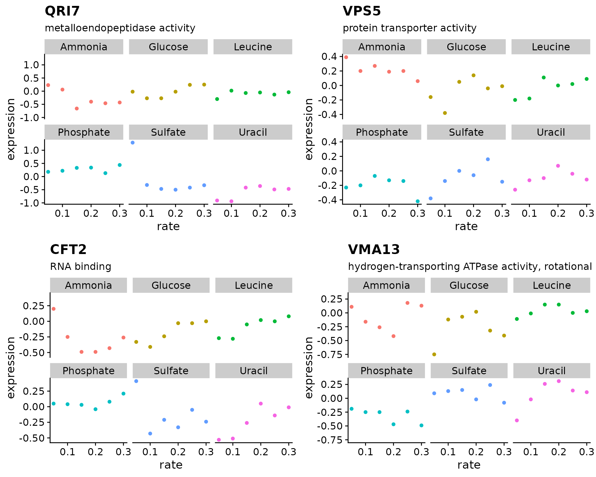
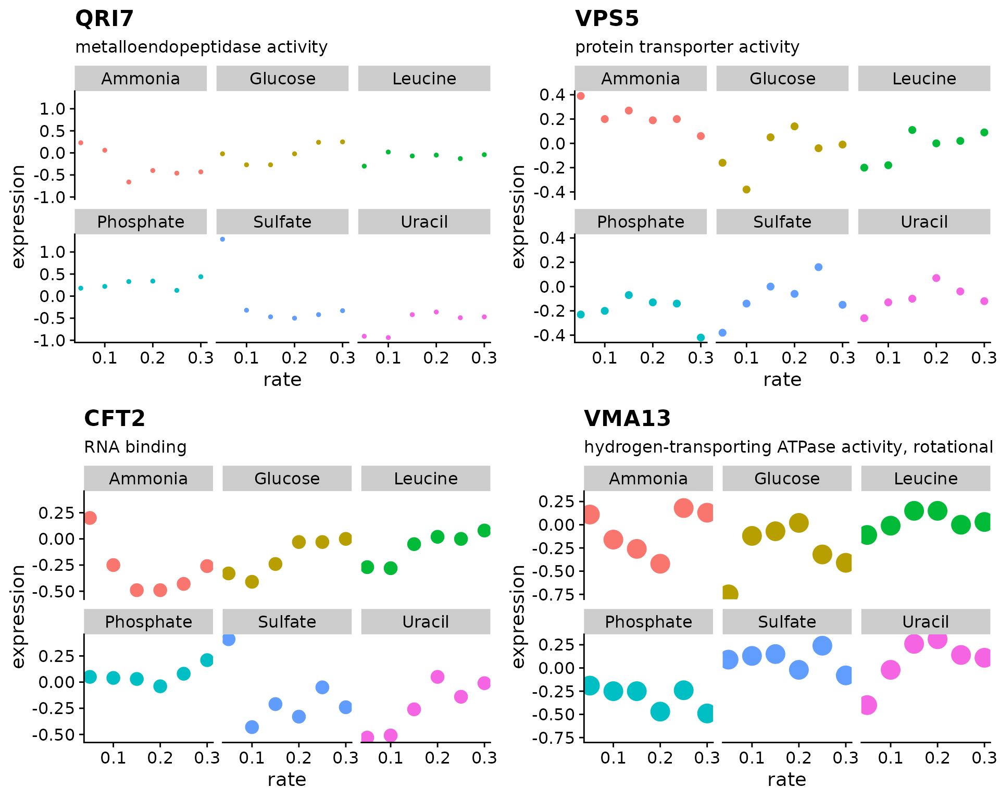

Introduction
As discussed in the previous class, you should try to limit duplication in your code. One way to do this is by writing functions, another way is through iteration. Reducing code duplication has several benefits:
- Your code easier to read
- You reduce the chance of mistakes from repeated copying and pasting
- It is easier to adapt your code for different requirements
Further reading
- R for Data Science by Garrett Grolemund and Hadley Wickham
- Advanced R by Hadley Wickham
for loops
for loops allow you to run the same code block repeatedly without copying and pasting.
# When writing a for loop, think about the output, sequence, and body
out <- vector("numeric", 5) # output
for (i in 1:length(out)) { # sequence
out[i] <- i * 5 # body
}
# It's helpful to think about what happens during each cycle of the loop
out[1] <- 1 * 5 # i = 1
out[2] <- 2 * 5 # i = 2
out[3] <- 3 * 5 # i = 3
out[4] <- 4 * 5 # i = 4
out[5] <- 5 * 5 # i = 5# Lets use rnorm() to create 5 vectors with different values for 'mean'
# One way to do this is by copying and pasting
vec_in <- c(1, 50, 20, 5, 70) # input
out <- vector("list", length(vec_in)) # output
out[[1]] <- rnorm(n = 10, mean = vec_in[1])
out[[2]] <- rnorm(n = 10, mean = vec_in[2])
out[[3]] <- rnorm(n = 10, mean = vec_in[3])
out[[4]] <- rnorm(n = 10, mean = vec_in[4])
out[[5]] <- rnorm(n = 10, mean = vec_in[5])
# Use a for loop to reduce code duplication
vec_in <- c(1, 50, 20, 5, 70) # input
out <- vector("list", length(vec_in)) # output
for (i in 1:length(vec_in)) { # sequence
out[[i]] <- rnorm(n = 10, mean = vec_in[i]) # body
}Write a for loop to create 3 vectors of different lengths
#> [[1]]
#> [1] -0.4057548 -0.6745024 -0.1480940 -0.4092698 -2.5724227
#>
#> [[2]]
#> [1] -0.4454368 -0.1984907 0.9551669 0.7756078 0.5509789 0.9482095
#> [7] -1.0917559 -0.6593295 -0.4984677 -1.0529355
#>
#> [[3]]
#> [1] 0.02931056 0.75606290Using seq_along(x) instead of 1:length(x)
# seq_along() mimics 1:length() for non-empty vectors
vec_in <- c(5, 10, 2)
1:length(vec_in)
#> [1] 1 2 3
seq_along(vec_in)
#> [1] 1 2 3
# seq_along() correctly handles empty vectors
emp_vec <- vector("numeric", 0)
1:length(emp_vec)
#> [1] 1 0
seq_along(emp_vec)
#> integer(0)Using the Brauer data
Using the Brauer gene expression data lets create a figure showing the growth rate vs expression for four genes
# This is the function we wrote in class-6
plot_expr <- function(input, sys_name, ...) {
gg_data <- input %>%
filter(systematic_name == sys_name)
plot_title <- gg_data$name[1]
plot_sub <- gg_data$MF[1]
gg_data %>%
ggplot(aes(rate, expression, color = nutrient)) +
geom_point(...) +
labs(title = plot_title, subtitle = plot_sub) +
facet_wrap(~ nutrient) +
theme_cowplot() +
theme(legend.position = "none")
}
# Lets try this with the copy-and-paste method
vec_in <- c("YDL104C", "YLR115W", "YMR183C", "YML017W") # input
out <- vector("list", length(vec_in)) # output
out[[1]] <- plot_expr(brauer_gene_exp, sys_name = vec_in[1])
out[[2]] <- plot_expr(brauer_gene_exp, sys_name = vec_in[2])
out[[3]] <- plot_expr(brauer_gene_exp, sys_name = vec_in[3])
out[[4]] <- plot_expr(brauer_gene_exp, sys_name = vec_in[4])
plot_grid(plotlist = out)Re-write the code from above using a for loop to generate our figure
vec_in <- c("YDL104C", "YLR115W", "YMR183C", "YML017W") # input
out <- vector("list", length(vec_in)) # output
for ( ???? ) { # sequence
# body
}
plot_grid(plotlist = out)
Introduction to map()
for loops are a powerful tool to reduce code duplication, however your code can be further simplified using the map() functions provided in the purrr package. These map() functions essentially run for (i in seq_along(x)) behind the scenes so you don’t have to explicitly type this.
There is a function for each type of output:
-
map()makes a list -
map_lgl()makes a logical vector -
map_int()makes an integer vector -
map_dbl()makes a double vector -
map_chr()makes a character vector
Each map() function requires two inputs: map(.x, .f, ...)
-
.xis a list or atomic vector -
.fis a function or formula
# We previously used a for loop to create vectors with different values for mean
vals <- c(1, 50, 20, 5, 70) # input
out <- vector("list", length(vals)) # output
for (i in seq_along(vals)) { # sequence
out[[i]] <- rnorm(n = 10, mean = vals[i]) # body
}
# Using map() we can further simplify this code
# .x indicates where each element of the vector should be inserted
out <- map(
.x = vals,
.f = ~ rnorm(n = 10, mean = .x)
)
# You can use brackets to include a multi-line code block
out <- map(vals, ~ {
rnorm(n = 10, mean = .x)
})
# map() allows for very readable code
# Each element of the vector is passed to the first available argument
out <- map(vals, rnorm, n = 10)Use rnorm() and map() to create 3 vectors of different lengths
#> [[1]]
#> [1] 0.2068064 0.6638498 -0.1988099 -0.3257463 1.4674639
#>
#> [[2]]
#> [1] -0.2046594 -0.3108961 -0.2164058 0.7519694 -0.5663685 2.0023858
#> [7] 1.2957174 0.9505907 -2.3565995 0.5417138
#>
#> [[3]]
#> [1] -0.2069461 0.4191227Re-write the code from above using map() to generate our growth rate figure
genes <- c("YDL104C", "YOR069W", "YLR115W", "YPR036W")
expr_plots <- map(
????
)
plot_grid(plotlist = expr_plots)
Mapping over multiple arguments
If you have two vectors containing values that you want to pass to a function this can be accomplished with map2().
genes <- c("YDL104C", "YOR069W", "YLR115W", "YPR036W")
shapes <- c(1, 2, 3, 4)
expr_plots <- map2(genes, shapes, ~ {
plot_expr(
input = brauer_gene_exp,
sys_name = .x,
shape = .y
)
})
plot_grid(plotlist = expr_plots)
Use map2() to create plots for 4 different genes, each with a different point size
genes <- c("YDL104C", "YOR069W", "YLR115W", "YPR036W")
expr_plots <- map2(
????
)
plot_grid(plotlist = expr_plots)
pmap can be used to map over any number of arguments.
# Create a list of input vectors
genes <- c("YDL104C", "YOR069W", "YLR115W", "YPR036W")
sizes <- c(1, 2, 4, 6)
shapes <- c(1, 2, 3, 4)
plot_args <- list(genes, sizes, shapes)
# Use an argument list with pmap
expr_plots <- pmap(plot_args, ~ {
plot_expr(
input = brauer_gene_exp,
sys_name = ..1,
size = ..2,
shape = ..3
)
})
# A simpler way
plot_args <- list(
sys_name = c("YDL104C", "YOR069W", "YLR115W", "YPR036W"),
size = c(2, 4, 6, 8),
shape = c(1, 2, 3, 4)
)
expr_plots <- pmap(
.l = plot_args,
.f = plot_expr,
input = brauer_gene_exp
)
plot_grid(plotlist = expr_plots)